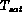
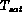
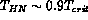

Vapor may form from a liquid (a) at a vapor-liquid interface away from surfaces, (b) in the bulk of the liquid due to density fluctuations, or (c) at a solid surface with pre-existing vapor or gas pockets. In each situation one can observe the departure from a stable or a metastable state of equilibrium. The first physical situation can occur at a planar interface when the liquid temperature is fractionally increased above the saturation temperature of the vapor at the vapor pressure in the gas or vapor region. Thus, the liquid "evaporates" into the vapor because its temperature is maintained at a temperature minimally higher than its vapor "saturation" temperature at the vapor system pressure. Evaporation is the term commonly used to describe such a situation which can also be described on a microscopic level as the imbalance between molecular fluxes at these two distinctly different temperatures. We consider this conceptual picture again, when condensation is later considered in Section 9.
When considering the other two situations of vapor formation, a vapor bubble or "nucleus" must be formed and be mechanically and thermally stable. Consider the simplest case of a spherical vapor bubble of pressure,  , with a saturation temperature of
, with a saturation temperature of  in its liquid with pressure,
in its liquid with pressure,  , which corresponds to its saturation temperature  . Mechanical equilibrium requires that
, which corresponds to its saturation temperature  . Mechanical equilibrium requires that
where  is the interfacial surface tension and r is the bubble radius of curvature. If the liquid is also in thermal equilibrium with the vapor, , which then implies . If one uses simple thermodynamics, combining equation 5.1 with the equality of local temperatures, one finds the needed liquid superheat for the vapor bubble to exist
is the interfacial surface tension and r is the bubble radius of curvature. If the liquid is also in thermal equilibrium with the vapor, , which then implies . If one uses simple thermodynamics, combining equation 5.1 with the equality of local temperatures, one finds the needed liquid superheat for the vapor bubble to exist

One can now relate the superheat required within the bulk of the liquid or at a solid-gas-liquid interface to the size of nuclei.
In a bulk liquid, thermal fluctuations always exist as a small but finite cluster of molecules can take on higher than macroscopic average energies (i.e., temperature). As the bulk liquid increases in its superheat these molecule clusters can take on "vapor-like" energies with increasing probability, and possibly form a stable "vapor nucleus." This process of vapor bubble nucleation is referred to as "homogeneous nucleation." One can use a thermodynamics approach to estimate the degree of liquid superheat necessary to form a stable vapor nucleus; e.g.,  for atmospheric pressures. However, a statistical mechanics approach (Blander 1975, Skripov, 1970) provides a more complete picture of the nucleation rate as
where is the collision frequency
k is the Boltzman's constant, h is Planck's constant and is liquid molecular density . is the free energy of formation for the vapor nucleus of radius, r, given by
where  is evaluated at
is evaluated at  and
and  is the saturation pressure at
is the saturation pressure at  . As the liquid superheat increases, the surface tension decreases and increases. Thus, at a particular
. As the liquid superheat increases, the surface tension decreases and increases. Thus, at a particular  the nucleation rate increases markedly and this corresponds to the "homogeneous nucleation" temperature, ; e.g., for water at atmospheric pressure, which corresponds to vapor nuclei radii of ;SPMlt;1 micron. Such a superheat value for the onset of vapor nucleation is far above experimental observations for water, under commercial applications, thus it is not the primary mode of vapor nucleation, under normal circumstances. Nevertheless, it must be considered as operating conditions change (e.g., pressure) especially for organic liquids.
the nucleation rate increases markedly and this corresponds to the "homogeneous nucleation" temperature, ; e.g., for water at atmospheric pressure, which corresponds to vapor nuclei radii of ;SPMlt;1 micron. Such a superheat value for the onset of vapor nucleation is far above experimental observations for water, under commercial applications, thus it is not the primary mode of vapor nucleation, under normal circumstances. Nevertheless, it must be considered as operating conditions change (e.g., pressure) especially for organic liquids.
Finally, consider the situation where a vapor/gas pocket exists near a solid surface in a liquid (Figure 5.3). Container surfaces can provide sites for vapor formation. This third method of vapor generation from pre-existing vapor nuclei is called "heterogeneous nucleation." Examples of such pre-existing nuclei include noncondensible gas bubbles held in an emulsion in the liquid pool or gas/vapor filled cracks or cavities on container surfaces (Figure 5.3). The latter example is probably the most common circumstance for vapor bubble nucleation. In fact, one could derive the required liquid superheat necessary for the case of an ideal cavity of known radius. One finds it is substantially lower than that needed for homogeneous nucleation, because the cavity radius is much larger. Thus, the bubble requires less superheat and associated pressure difference for thermal and mechanical stability. It is hypothesized that the maximum superheat occurs at the throat of any cavity where the radius is smallest for most aqueous fluids with large contact angles. (Note: the contact angle is the angle through the liquid between the solid-liquid interface and the liquid-vapor interface, and depends on liquid-surface chemistry; e.g., water and commercial steel ).
Only a small fraction of all cavities become effective sites for vapor nucleation, because one must consider the balance between the required superheat for a cavity of radius,  , and the temperature gradient from the wall, , to the bulk liquid at saturation, ; as depicted by Hsu (1962) Figure 5.4 gives a conceptual picture of the model. As the heat flux at the wall is increased, the wall temperature, which is probably representative of the vapor bubble and local liquid temperature, exceeds the saturation temperature. The liquid will locally vaporize and the vapor nuclei in the cavity will grow toward the cavity throat at the heater surface. If one assumes that the liquid temperature gradient from the wall to the bulk is approximately linear, then the requirement for mechanical and thermal stability of a vapor nucleus at the cavity exit is that the whole bubble should be in a liquid region of boundary layer size, where the temperature is at least above a value of
, and the temperature gradient from the wall, , to the bulk liquid at saturation, ; as depicted by Hsu (1962) Figure 5.4 gives a conceptual picture of the model. As the heat flux at the wall is increased, the wall temperature, which is probably representative of the vapor bubble and local liquid temperature, exceeds the saturation temperature. The liquid will locally vaporize and the vapor nuclei in the cavity will grow toward the cavity throat at the heater surface. If one assumes that the liquid temperature gradient from the wall to the bulk is approximately linear, then the requirement for mechanical and thermal stability of a vapor nucleus at the cavity exit is that the whole bubble should be in a liquid region of boundary layer size, where the temperature is at least above a value of  which satisfies the equilibrium condition of equation 5.2, for . If there is a sufficiently large array of cavity sizes this "onset of nucleation" will first occur when the liquid temperature profile is tangent to the line of thermal and mechanical equilibrium (Figure 5.4). One can algebraically eliminate the cavity radius,
which satisfies the equilibrium condition of equation 5.2, for . If there is a sufficiently large array of cavity sizes this "onset of nucleation" will first occur when the liquid temperature profile is tangent to the line of thermal and mechanical equilibrium (Figure 5.4). One can algebraically eliminate the cavity radius,  , from the two equations by equality of temperature and slope and find the relation between the heat flux, , at which the "onset of nucleate boiling", ONB, occurs
, from the two equations by equality of temperature and slope and find the relation between the heat flux, , at which the "onset of nucleate boiling", ONB, occurs
where all properties are evaluated at . Now if there are no cavities at this size the heat flux must increase so that the superheat temperature increases to a point where a cavity first exists and the temperature profile intersects the equilibrium curve in Figure 5.4.
One should notice that this model only provides a stability line where the "onset of nucleate boiling" may first occur. To find the particular heat flux and superheat pair one must look for the intersection of this stability line with natural convection mode of heat transfer that would exist prior to boiling (Figure 5.5)
and Gr is the liquid Grashof number for  and Pr is the liquid Prandtl number. For water at atmospheric pressure this model predicts an "onset of nucleate boiling" for a superheat less than C, which corresponds to a cavity size of about 50 microns. In practice the superheat may be as high as C for very smooth, clean metallic surfaces, which indicates larger cavities were not available on the surface. As a very rough guide (Brown, 1967) aqueous fluids seem to have active sites ;SPMlt; 10 microns, organic ;SPMlt; 5 and cryogens ;SPMlt; 1.5 microns.
and Pr is the liquid Prandtl number. For water at atmospheric pressure this model predicts an "onset of nucleate boiling" for a superheat less than C, which corresponds to a cavity size of about 50 microns. In practice the superheat may be as high as C for very smooth, clean metallic surfaces, which indicates larger cavities were not available on the surface. As a very rough guide (Brown, 1967) aqueous fluids seem to have active sites ;SPMlt; 10 microns, organic ;SPMlt; 5 and cryogens ;SPMlt; 1.5 microns.